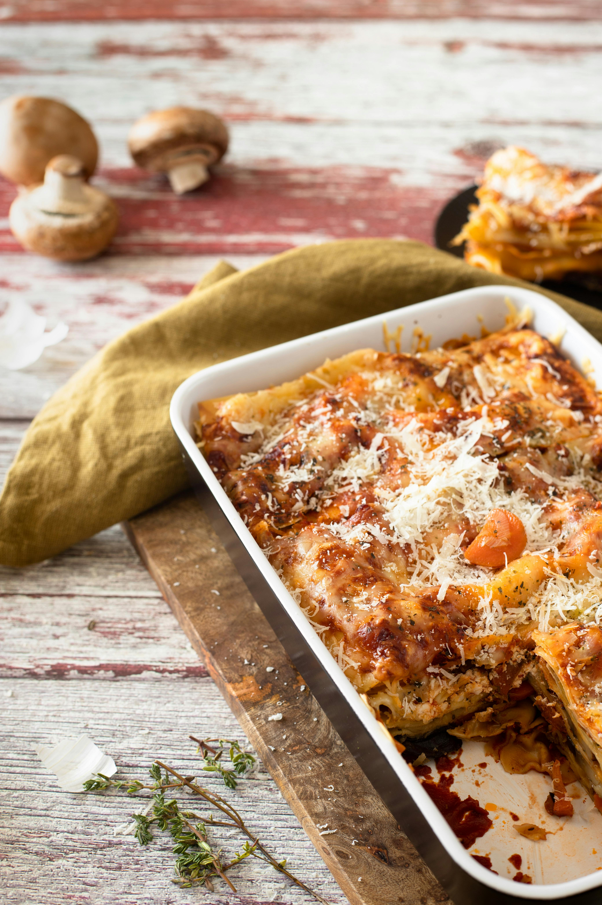

Home
Lasagna

Description
This lasagna recipe takes a little work, but it is so satisfying and filling that it's worth it!
Ingredients
Minced meat sauce
- 700 grams of pork shoulder
- 2 medium onions - 200 grams
- half a head of garlic - 6 larger cloves
- 200 grams of mushrooms
- A glass of tomato puree - 330 grams
- A larger jar of tomato paste - 200 grams
- Herbs and spices:
- A flat tablespoon of marjoram and Provencal herbs
- A flat teaspoon of salt, pepper and sweet paprika
- 4 tablespoons of vegetable oil
White sauce
- 100 grams of sweet cream 30% - less than half a cup
- 1/3 cup of milk
- A flat teaspoon of sweet paprika
The rest of Ingredients for lasagna
- 12 sheets of dry pasta for lasagna - 215 grams
- 250 grams of mozzarella cheese without brine
- 250 grams of yellow cheese, e.g. Kurpie cheese
Steps
- Grind the pork shoulder
- Add the spices to the ground meat:
- A flat tablespoon each of marjoram and Provencal herbs
- A flat teaspoon each of salt, pepper and sweet paprika
- Mix the meat and spices and set aside
- Peel the onion and finely dice it
- Peel the garlic cloves and press them
- Peel and chop large mushrooms into smaller pieces
- Heat a medium-sized frying pan and add four tablespoons of vegetable oil, e.g. grapeseed or rice
- Sauté the onion, garlic, and mushrooms for about five minutes over a slightly higher heat setting. The onion should just begin to translucent
- Add the ground meat with the spices to the pan
- Sauté for a few minutes, until the meat has softened
- Stir the contents of the pan with a wooden spoon, using a spoon to separate the ground meat pieces
- After a few minutes, you can pour in a cup of tomato puree. You can use canned, cartoned, or bottled passata. Also add 200 grams of tomato paste
- Mix the delicious meat and tomato lasagna filling thoroughly and turn off after two minutes.
- Prepare a baking dish for the lasagna. It can be ceramic or glass. Dimensions: 30 x 22 x 6 cm, where 6 cm is the height of the rim. Simply grease the inside of the dish with oil.
- Grate the mozzarella cheese (not the light, pickled kind) using a large grater.
- Grate the yellow cheese using the same grater.
- Place both cheeses together in a bowl.
- To ensure that the lasagna sheets are cooked through and tender, soften them slightly before placing them in the pan.
- Simply pour water into the pan.
- Turn the heat to medium and heat the water until it boils.
- Reduce the heat to low.
- Immerse three sheets in the boiling water.
- Carefully remove them after about 60 seconds and arrange them on the bottom of the pan.
- Arrange three sheets of soft lasagna noodles side by side.
- Spread a thin but full layer of meat filling over the noodles.
- Spread the grated cheese over the meat filling. Try to distribute it evenly throughout the pan, remembering to leave enough ingredients for the subsequent layers of lasagna.
- Place three more sheets of soft pasta on top of the cheese. Another layer of meat filling, then a layer of cheese.
- Repeat this process for the next two layers. After the fourth layer of pasta, do not add any more meat.
- You can spread the remaining cheese on the pasta sheets.
- You can pour a mixture of milk and sweet cream with a pinch of sweet paprika over the lasagna, or you can make a béchamel sauce and cover the casserole with it.
- Place the baking dish with the ready-to-bake casserole in an oven preheated to 180 degrees Celsius.
- Select the middle rack with the top/bottom heat setting.
- Bake the lasagna for 50 minutes.
- Take out the lasagna and enjoy!